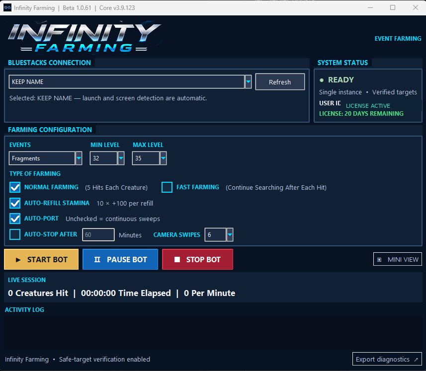
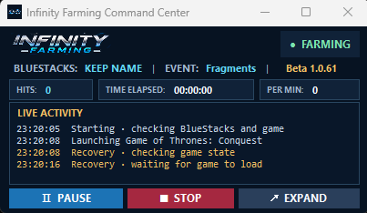

◎
Automated Farming
Choose supported events, levels, and Normal or Fast Farming modes.
Infinity Farming automates repetitive creature farming with customizable event selection, stamina management, and smart recovery—so you can spend less time on routine tasks.
Independent software for GOTC • Active license required


Manage your farming sessions from one Windows interface, with configurable settings and automatic recovery from many common interruptions.
Choose supported events, levels, and Normal or Fast Farming modes.
Handle many popups, unexpected screens, and game interruptions.
Optional stamina refills using available items and supported fallback routines.
Search new areas when nearby targets run out.
Monitor activity and control your bot without the full dashboard.
Adjust events, target levels, swipes, and optional stop timers.
Join our Discord community to register, obtain your license, and receive installation instructions.
Installation links are provided to approved customers through Discord. Windows may display an unknown-publisher warning because the installer does not have a Windows Authenticode certificate.